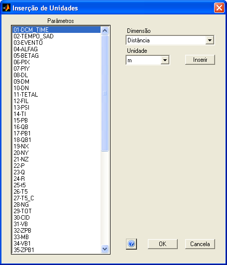

| Menu Ferramentas |
|
Essa
ferramenta
permite que o
usuário insira ou altere os nomes das unidades nos nomes dos parâmetros
das matrizes
de trabalho. A ferramenta é útil quando a matriz UNIT não está
presente no arquivo ou quando a matriz PARAM não contém os nomes das
unidades.
Para acessar a ferramenta, clique em “Ferramentas ► Inserção de
unidades nos parâmetros”.

Descrição
e Operação
A janela do Insersor de Unidades apresenta à esquerda a lista com todos os nomes dos parâmetros (exceto "No. OBS.", que não pode ser alterado) com uma barra de rolagem para percorrer a lista, caso necessário, e uma área à direita para seleção e inserção das unidades desejadas.
Para inserir ou alterar as unidades:
- Selecione os parâmetros desejados (é possível selecionar vários parâmetros simultaneamente usando o mouse e os botões "Ctrl" e "Shift" do teclado);
- Selecione a dimensão da unidade no campo "Dimensão" e a unidade em si no campo "Unidade". A lista de unidades é a mesma da função de conversão de unidades (exceto variação temporal);
- Caso a unidade desejada não esteja disponível, selecione a dimensão "Outra" e insira a unidade manualmente.
- Clique no botão "Inserir" para inserir ou alterar as unidades dos parâmetros selecionados.
Observações:
Os nomes dos parâmetros seguem o formato "Parâmetro (unidade)".
Se um parâmetro selecionado já possuir unidade, a mesma será substituída pela nova unidade.
Para remover as unidades, selecione a dimensão "Outra" e deixe o campo "Unidade" em branco.
Sair
Para confirmar
as alterações realizadas, clique no botão “OK” e confirme. A
matriz PARAM será atualizada.
Para
descartar as alterações, clique no
botão “Cancela”.
| |
Editor de nomes de parâmetros |
Padronização de
nomes de unidades |
 |